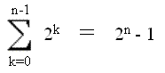

Intro to Number Systems
Counting in base 10
Most of us are used to counting in what as known as "base 10." That is, every digit in our representation of numbers is a value multiplied by a power of ten that serves as a placeholder. Take 31337, for example:
| "Ten Thousands" Place (104) | "Thousands" Place (103) | "Hundreds" Place (102) | "Tens" Place (101) | "Ones" Place (100) |
| 3 | 1 | 3 | 3 | 7 |
Hopefully, if you didn't notice it already, you now realize that each placeholder increases by one order of magnitude from right to left, starting at 0 at the rightmost position (for integer numbers), and that the value tells how many of a particular type of placeholder you have. Hence, 31337 is technically 3x104 + 1x103 + 3x102 + 3x101 + 3x100, but we would never write it that way.
Counting in binary
A slight problem exists when trying to represent numbers electronically. Since it is excruciatingly difficult to represent numbers in base 10 using a computer, everything is represented in base 2, or binary, in digital electronics. This is much more straightforward, as it means that every digit is composed of a tiny switch that can either be ON(1) or OFF(0). It is important to note that the word "digital," therefore, actually means that something can only have two values (whereas "analog" means that something can have a continuous range of values). Since we no longer have one base with which to represent numbers, it is now important to specify which one we are using. We do this by putting a subscript with the number of the base below the string in question. For instance, "fifteen" is 1510, but it is also 11112 (binary: 1+2+4+8). Let's look at some other examples of binary numbers:
Convert the following numbers from binary to base 10:
- 101102
Answer:
| "Sixteens" Place (24) | "Eights" Place (23) | "Fours" Place (22) | "Twos" Place (21) | "Ones" Place (20) |
| 1 | 0 | 1 | 1 | 0 |
The answer is 1x24 + 0x23 + 1x22 + 1x21 + 0x20 = 16+4+2 = 2210
- 11010010101112
Answer:
(With long numbers like this, it is usually easier to work from right to left)
1+2+4+16+64+512+2048+4096 = 674310
Notice how many more digits it takes to represent a quantity in base 2 than it does to represent the same quantity in base 10. This will be addressed later.
- 101.112
Answer: This problem is a bit trickier than the other ones. Hopefully, you noticed the decimal point after the 101. Just as in base ten, the digit directly to the left of the decimal point has a placeholder value of the base raised to the zero power. As usual, the power of the placeholder's base decreases by one with every move to the right, and it increases by one with every move to the left. Hence, we get something like this:
| "Fours" Place (22) | "Twos" Place (21) | "Ones" Place (20) | "Halves" Place (2-1) | "Fourths" Place (10-2) |
| 1 | 0 | 1 | 1 | 1 |
1x22 + 0x21 + 1x20 + 1x2-1 + 1x2-2 = 5.7510
Counting in octal and hexadecimal
As you probably noticed in example two of the "counting in binary" section, it is rather cumbersome to express large values in binary. Luckily, there is a sort of "shorthand" system available for long binary strings. This is where octal (base 8) and hexadecimal (base 16) come in, for their placeholders are powers of two. In octal, each digit has a placeholder of power 8, and its value can range from 0 to 7. In hexadecimal, each digit has a placeholder of power 16, and its value can range from 0 to F (16). It might seem strange that a digit of a number is a letter, but it would be ambiguous if we had two numbers in one place (then how would we know where one digit began and another one ended?). Hence, hex counting goes as follows:
1...2...3...4...5...6...7...8...9...A...B...C...D...E...F...10...11...etc....
So why are octal and hex so useful? Well, recall one of the fundamental rules of exponents: (an)k = an*k. This means that for every n octal digits, 3n binary digits are needed [8n=(23)n=23n], and for every n hex digits, 4n binary digits are needed [16n=(24)n=24n]. Hence, it is easy to convert from binary to hex or octal and vice versa. Let's look at some examples:
- Convert the following from binary to octal: 1011111100012
Answer: (For every three binary digits, there is one octal digit)
| Binary | 101 | 111 | 110 | 001 |
| Octal | 5 | 7 | 6 | 1 |
|
Therefore, the answer is 57618 |
Check by converting each to base 10:
Binary: 1+16+32+64+128+256+512+2048 = 305710
Octal: 1 + 8x6 + 64x7 + 512x5 = 305710
This checks out
- Convert the following from binary to hexadecimal: 101011101111001111002
Answer: (For every four binary digits, there is one hex digit)
| Binary | 1010 | 1110 | 1111 | 0011 | 1100 |
| Hex | A | E | F | 3 | C |
| Therefore, the answer is AEF3C16 |
Check by converting each to base 10:
Binary: 4+8+16+32+256+512+1024+2048+8192+16384+32768+131072+524288 = 71660410
Hex: 12 + 16x3 + 256x15 + 4096x14 + 65536x10 = 71660410
- Convert the following from octal to hexadecimal: 65473128
Answer: (First, convert the string to binary. Then, convert the new binary string to hexadecimal)
| Octal | 6 | 5 | 4 | 7 | 3 | 1 | 2 |
| Binary | 110 | 101 | 100 | 111 | 011 | 001 | 010 |
| In binary, this string is 1101011001110110010102 |
| Binary | 0001 | 1010 | 1100 | 1110 | 1100 | 1010 |
| Hex | 1 | A | C | E | C | A |
| In hexadecimal, our final answer is 1ACECA16 |
Check by converting each to base 10:
Octal: 2+ 8x1 + 64x3 + 512x7 + 4096x4 + 32768x5 + 262144x6 = 175687410
Hex: 10 + 16x12 + 256x14 + 4096x12 + 65536x10 + 1048576x1 = 175687410
When converting from hex to octal or vice versa, it is much easier to use binary as an intermediate step than it is to use base 10 (and less error-prone).
Other odds and ends
- Sometimes, it is useful to know the range of values available with a certain number of allocated bits, especially with different variable types that use different amounts of memory. This is where a useful identity can come in:
|  |
Proof by Induction:
Base Case (n=1): 1 = 2-1 (TRUE)
Inductive Step: Assume 1 + 2 + 4 + ... + 2n-1 = 2n - 1
- 1 + 2 + 4 + ... + 2n-1 + 2n =? 2n+1 - 1 (verify for n+1 case)
- (1 + 2 + 4 + ... + 2n-1) + 2n =? 2n+1 - 1
- 2n - 1 + 2n =? 2n+1 - 1 (substitution of the assumption)
- 2(2n) - 1 =? 2n+1 - 1
- 2n+1 - 1 = 2n+1 - 1
|
Let's find out the maximum value of an unsigned char, which is 8 binary digits (bits) long. Its leftmost placeholder is 27, so it will support values from 0 to 28 - 1, or 255. Including zero, this is 256 different values possible.
- Here is an algorithm that I always use to convert form base 10 to binary (with some modification, this algorithm can also be written to convert between any two bases, but you will rarely need to do that on the ACSL contest):
X = what's left of base 10 value, n = power of current binary bit
- Find the smallest value of n for which X - 2n < 0, and set n equal to that value
- Subtract 1 from n
- If X-2n >= 0 now, then write a 1 in the 2n place and subtract 2n from the current value of X
Otherwise, write a 0 in the 2n place
- If n>0, GOTO step 2
Otherwise, we have completely translated the string from base 10 to binary
Let's take 30010, for instance. The smallest n power of 2 that goes over 300 is 29 (512), so set n=8. Now, put a 1 in the leftmost place, because 28 (256) goes into 300. We now have 44 left to account for. Put a zero in the 27 and 26 places, and put a 1 in the 25 place. We now have 12 left to account for (44-32 = 12). Put a zero in the 24 place, and put a 1 in both the 23 and 22 places. Nothing is left over, so fill in the last two places with a zero: 1001011002